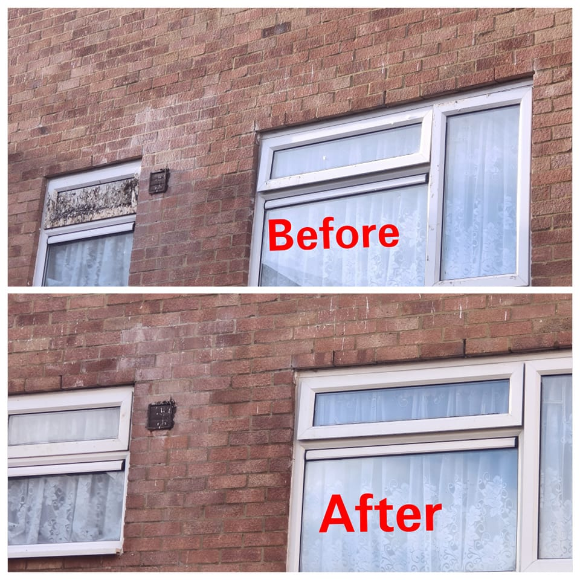
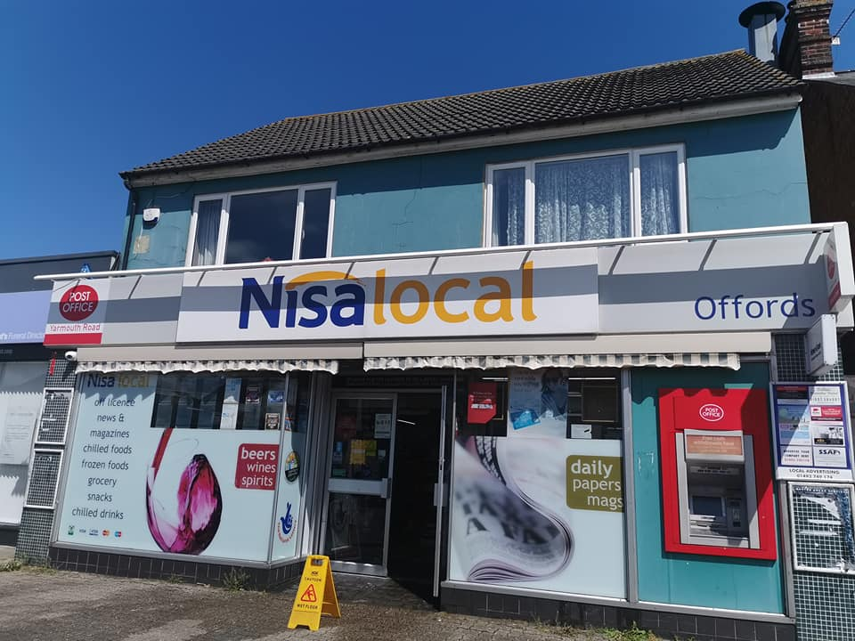

Before & After Results
See the difference Easy Cleaning Solutions can make.


Before

After
At Easy Cleaning Solutions County Durham, we take the hassle out of keeping your windows sparkling clean. Based in County Durham, our dedicated team specialises in providing top-notch window cleaning services for both residential and commercial properties. With years of experience under our belt, we understand the importance of pristine windows in enhancing the overall appearance of your space. With a focus on professionalism and attention to detail, Easy Cleaning Solutions takes the hassle out of keeping your windows spotless. Say goodbye to streaks, smudges, and grime with our reliable and efficient window cleaning services. We understand the importance of clean windows in creating a welcoming atmosphere for your home or business. Let us take the stress out of maintaining your windows so you can focus on what matters most. Contact Easy Cleaning Solutions County Durham today for all your window cleaning needs in County Durham. Enjoy crystal-clear views with our expert Window Cleaners in County Durham services – because when it comes to clean windows, we’ve got you covered!
See the difference Easy Cleaning Solutions can make.
Phone: 07949114943
Service Area: Residential & commercial properties in County Durham
Business Hours:
Contact us today for a free quote. We respond quickly and guarantee quality service.
WhatsApp SMS Call